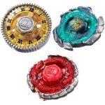

Strongest Blader Set
| Strongest Blader Set | |
|  | |
| Number: | BB-117 |
|---|---|
| System: | Metal Fight Beyblade |
Contents
Contents
- MF-H Basalt Horogium 130RS (Yellow)
- MF-F Nightmare Rex UW145EWD (Red)
- Metal Face Custom Ver. Tool (Clear Bright Orange)
The Tracks and Bottoms in this set are clear versions
Note: The Sonokong release of the Strongest Blader Set also includes a Bey Deck Case
Overall
The Strongest Blader Set contains top tier parts for every type of Beyblade: Nightmare Rex's Bottom EWD is a top tier Stamina part, Basalt and RSF are great Defense parts, and Metal Face Custom Version, which is useful for both Attack and Defense customizations. The main draw of the contents though is Blitz Unicorno, which is exclusive to this set. Unicorno II is a useful Clear Wheel, and RSF is a viable Defense Bottom.
This set is an all-around useful purchase for any competitive Blader, and it is still readily available. It provides a good base to build from for Bladers getting started with competitive battling, but is still useful for those with more complete collections.